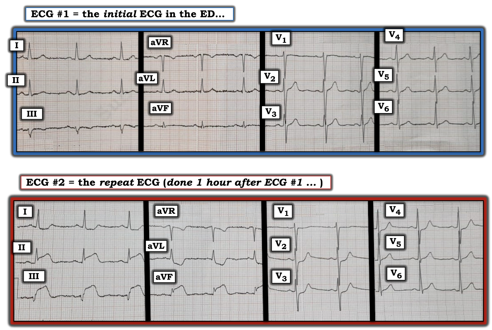
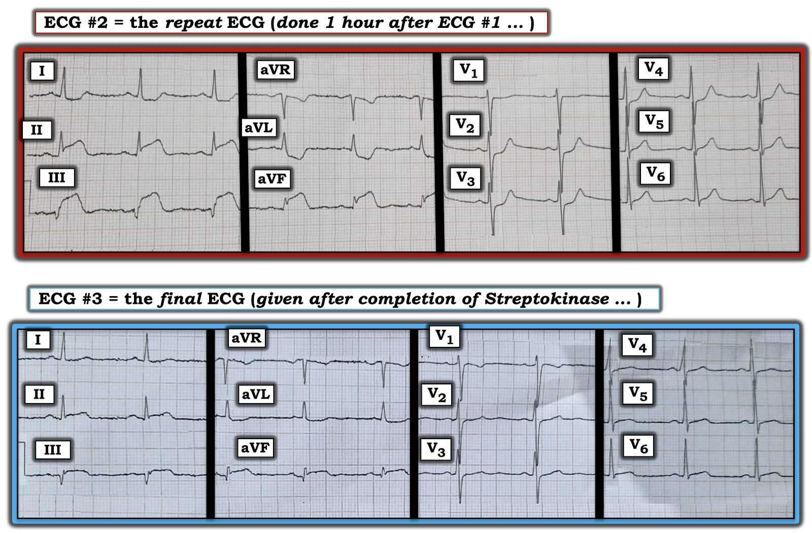
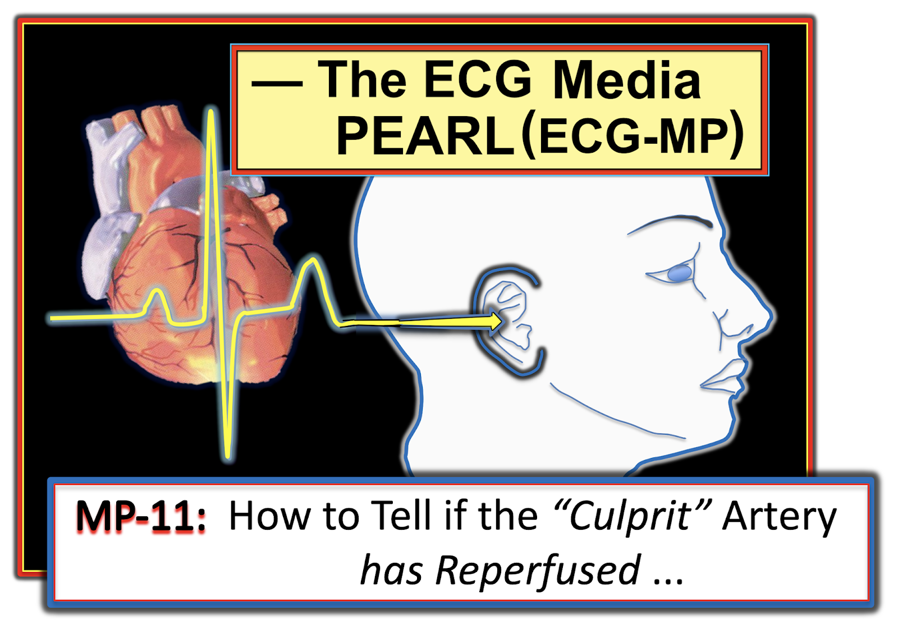

ECG Blog #294 — Một giờ sau
Bệnh nhân có các điện tâm đồ trong Hình-1 — là một người đàn ông 55 tuổi đến khám vì đau ngực mới xuất hiện kéo dài ~2 giờ. Điện tâm đồ #1 được ghi khi bệnh nhân vừa đến ED (khoa Cấp cứu – Emergency Department). Triệu chứng vẫn tiếp diễn — và một giờ sau, điện tâm đồ #2 được ghi.
CÂU HỎI:
- BẠN đọc 2 bản ghi liên tiếp này như thế nào?
- Động mạch "thủ phạm"? (Hãy cụ thể nhất có thể.).
- Trong điện tâm đồ #1 có bất kỳ dấu hiệu gợi ý nào cho thấy chỉ 1 giờ sau chúng ta sẽ thấy hình ảnh như ở điện tâm đồ #2 không?


=======================================
LƯU Ý: Đến đây, một số bạn đọc có thể muốn nghe ECG Audio PEARL dài 10 phút của tôi trước khi đọc Suy nghĩ của tôi về điện tâm đồ trong Hình-1. Bạn cứ thoải mái xem lại Suy nghĩ của tôi về điện tâm đồ #1 vào bất cứ lúc nào (nằm ngay bên dưới ECG MP-10).
=======================================

ECG Media PEARL #10 (10 phút Âm thanh) hôm nay — trình bày lý do vì sao thuật ngữ “OMI” ( = nhồi máu cơ tim do tắc – Occlusion-based MI) nên thay thế thuật ngữ quen thuộc hơn là STEMI — và — ôn lại những điều cơ bản về cách dự đoán động mạch "thủ phạm".
SUY NGHĨ CỦA TÔI về 2 điện tâm đồ trong Hình-1:
Tôi được gửi các bản ghi của ca hôm nay — và tôi xem điện tâm đồ #1 trước. Tôi thấy nhịp xoang ~65-70/phút — các khoảng bình thường (PR, QRS, QTc) và trục bình thường (khoảng +20 độ). Không lớn buồng tim.
- Về Thay đổi Q-R-S-T ở điện tâm đồ #1 — không có sóng Q — tăng tiến sóng R (R wave progression) bình thường, với vùng chuyển tiếp hơi muộn (sóng R chưa cao hơn độ sâu sóng S cho đến giữa chuyển đạo V4-đến-V5).
- Những dấu hiệu ST-T đáng chú ý duy nhất nằm ở các chuyển đạo dưới. Có ST-T dẹt không đặc hiệu ở chuyển đạo aVF, và ở mức độ ít hơn ở chuyển đạo II. Có sóng T đảo ngược nông, đối xứng ở chuyển đạo III — nhưng vì phức bộ QRS chủ yếu âm ở chuyển đạo này, đây không nhất thiết là dấu hiệu bất thường (nhất là khi không có sóng T đảo ngược ở 2 chuyển đạo dưới còn lại).
- ĐIỀU CỐT LÕI của điện tâm đồ #1: Có một vài bất thường ST-T không đặc hiệu ở các chuyển đạo dưới — nhưng tôi không thấy điều gì báo trước những gì sắp xảy ra ở điện tâm đồ #2.
Về điện tâm đồ #2:
Nhịp xoang vẫn hiện diện với tần số tương tự như ở điện tâm đồ #1. Các khoảng và trục vẫn bình thường. Không lớn buồng tim. NHƯNG — phần còn lại của việc đọc đã thay đổi ngoạn mục chỉ trong vòng một giờ. Các dấu hiệu điện tâm đồ cụ thể hiện thấy trên điện tâm đồ #2 gồm:
- ST chênh lên rõ rệt ở mỗi chuyển đạo dưới (với ST chênh lên ở chuyển đạo III rõ ràng lớn hơn ở chuyển đạo II). Sóng q nhỏ ở chuyển đạo II và aVF + một sóng Q lớn, rộng ở chuyển đạo III.
- ST chênh xuống soi gương (reciprocal) rõ rệt ở các chuyển đạo bên cao I và aVL (với hình dạng ST-T ở chuyển đạo aVL là hình ảnh soi gương ngược lại với hình dạng ST chênh lên ở chuyển đạo III).
- ST chênh xuống dạng bậc thềm (shelf-like) rõ rệt ở các chuyển đạo V2, V3, V4 (tức là nghiệm pháp soi gương dương tính (Mirror Test)) — nhưng hầu như không có ST chênh xuống ở chuyển đạo V1.
- ĐIỀU CỐT LÕI của điện tâm đồ #2: Ở bệnh nhân đau ngực mới xuất hiện này — điện tâm đồ này chẩn đoán STEMI dưới-sau cấp, do tắc cấp RCA đoạn gần (động mạch vành phải – Right Coronary Artery).
- ĐIỂM THEN CHỐT (PEARL) #1: Ngoài MI dưới-sau cấp — rất có khả năng có tổn thương RV (thất phải – Right Ventricular) cấp, vì không có bất kỳ ST chênh xuống nào ở chuyển đạo V1 (chuyển đạo nằm bên phải) trong bản ghi này, trong khi ST chênh xuống rất rõ ở các chuyển đạo lân cận V2,V3 (tức là ST chênh lên do nhồi máu thất phải (RV MI) ở chuyển đạo V1 có lẽ đã bị triệt tiêu bớt bởi ST chênh xuống do MI thành sau cấp mà lẽ ra sẽ xuất hiện ở chuyển đạo này). Chính tổn thương RV cấp này, trên thực tế, khu trú vị trí tắc mạch vành cấp ở RCA đoạn gần — vì động mạch vành LCx (động mạch mũ trái – Left Circumflex) không cấp máu cho thành thất phải (Xem ECG Blog #190 — để biết thêm về nhồi máu thất phải cấp).
- ĐIỂM THEN CHỐT (PEARL) #2: Đôi khi thật đáng để khiêm tốn khi thấy các dấu hiệu nhồi máu ngoạn mục trên điện tâm đồ có thể xuất hiện nhanh đến mức nào. Ca bệnh tôi trình bày trong ECG Blog #115 cho thấy một diễn tiến ngoạn mục tương tự, từ thay đổi ST-T kín đáo — đến ST chênh lên rõ ràng hoàn toàn trong vòng chỉ 8 phút. THÔNG ĐIỆP rất rõ ràng: Các điện tâm đồ liên tiếp có thể thay đổi cực kỳ nhanh. NẾU lo ngại một OMI (nhồi máu cơ tim do tắc – Occlusion-based MI) đang tiến triển cấp, nhất là khi bệnh nhân vẫn còn đau ngực — đôi khi cần ghi lại điện tâm đồ thường xuyên tới mức mỗi 10-20 phút, cho đến khi có chẩn đoán xác định.
Diễn tiến của ca này:
Cơ sở nơi bệnh nhân này được khám không có khả năng thông tim cấp cứu. Thay vào đó, bệnh nhân được điều trị ngay bằng liệu pháp tiêu sợi huyết (Streptokinase). Đau ngực đã hết — và điện tâm đồ #3 (trình bày trong Hình-2) được ghi.
CÂU HỎI:
- Liệu pháp tiêu sợi huyết có thành công không? Nếu có — LÀM SAO bạn biết?
- Bạn dự đoán các điện tâm đồ tiếp theo sẽ cho thấy điều gì?


TRẢ LỜI:
Khi được dùng kịp thời cho đúng bệnh nhân — liệu pháp tiêu sợi huyết có thể cực kỳ hiệu quả. Những đặc điểm của ca hôm nay gợi ý đáp ứng rất thuận lợi với Streptokinase gồm:
- Bệnh nhân hết đau ngực sau khi dùng liệu pháp tiêu sợi huyết.
- ST chênh lên ngoạn mục ở các chuyển đạo dưới đã cải thiện nhiều. ST chênh xuống soi gương ở các chuyển đạo bên cao I và aVL phần lớn đã hết.
- Các thay đổi điện tâm đồ của nhồi máu thành sau cấp (tức là ST chênh xuống dạng bậc thềm ở chuyển đạo V2,3,4) không còn nữa. Giờ đây ở chuyển đạo V1 thấy hình ảnh bình thường hơn là sóng T đảo ngược nông.
- Sóng Q ở các chuyển đạo dưới chỉ tăng kích thước rất ít.
Điều gì sẽ thấy trên các điện tâm đồ tiếp theo?
Ngoài việc hết đau ngực, cùng với mức ST chênh lên và chênh xuống giảm rõ rệt — tái tưới máu động mạch vành bị tắc thường được đánh dấu bằng sự xuất hiện sóng T đảo ngược khá sâu ở những chuyển đạo trước đó có ST chênh lên.
- Điều ngược lại được thấy khi tái tưới máu OMI thành sau cấp — với sự xuất hiện sóng T cao, nhọn ở các chuyển đạo trước (thay vì sóng T đảo ngược).
- Sẽ không có gì ngạc nhiên nếu thấy AIVR thoáng qua (nhịp tự thất gia tốc – Accelerated IdioVentricular Rhythm) — vì đây là một rối loạn nhịp do tái tưới máu cực kỳ thường gặp (Xem ECG Blog #194).
- Có thể xem một ví dụ về thay đổi sóng T tái tưới máu trong ECG Blog #268 .
=======================
Lời cảm ơn: Xin cảm ơn M Shah (từ Srinagar, Ấn Độ) đã chia sẻ ca bệnh và bản ghi này.
=======================

PHẦN BỔ SUNG:
- Dưới đây là một loạt đường link và tài liệu khác liên quan đến việc xác định động mạch “thủ phạm” — cùng suy nghĩ của tôi nhằm lập luận cho việc thay thế thuật ngữ “STEMI” bằng “OMI”, với hy vọng tăng đáng kể khả năng phát hiện tắc mạch vành cấp.
Tải PDF miễn phí các Mục liên quan trong cuốn ECG-2014-ePub của tôi:
- Tệp PDF: Tổng quan về tuần hoàn vành và động mạch “thủ phạm” trong MI cấp —
- Tệp PDF: MI thành sau và “nghiệm pháp soi gương” (“Mirror Test”) —



ECG Media PEARL #11 (6 phút Âm thanh) hôm nay — Ôn lại cách nhận biết NẾU động mạch “thủ phạm” (tức là động mạch bị tắc cấp) đã được tái tưới máu, dựa trên tiêu chuẩn lâm sàng và điện tâm đồ.
===================================
Các bài ECG Blog liên quan đến bài hôm nay:
- ECG Blog #205 — Ôn lại Cách tiếp cận hệ thống của tôi khi đọc điện tâm đồ 12 chuyển đạo.
- ECG Blog #184 — Mối liên hệ nghịch đảo kỳ diệu giữa chuyển đạo III và aVL.
- ECG Blog #167 — Thêm về mối liên hệ "kỳ diệu" giữa chuyển đạo III và aVL.
- ECG Blog #183 — Sóng T kiểu de Winter.
- ECG Blog #190 — Cách nhận biết RV MI cấp.
- ECG Blog #56 — MI thành sau; Nghiệm pháp soi gương
- ECG Blog #80 — Đâu là Động mạch Thủ phạm? + Nghiệm pháp Soi gương.
- ECG Blog #82 — Đâu là Động mạch Thủ phạm?
- ECG Blog #162 — Đâu là Động mạch Thủ phạm?
- ECG Blog #193 — Ôn lại một ca có thủ phạm nhiều khả năng là LCx ưu thế.
- ECG Blog #194 — Ôn lại cách nhận biết NẾU động mạch "thủ phạm" đã được tái tưới máu (kèm một ví dụ về AIVR).
- ECG Blog #230 — Ôn lại cách so sánh các điện tâm đồ liên tiếp.
- ECG Blog #115 — Cho thấy thay đổi ST-T ngoạn mục có thể xảy ra chỉ trong vòng 8 phút.
- ECG Blog #268 — Cho thấy một ví dụ về sóng T tái tưới máu.
- ECG Blog #246 — Ôn lại nghiệm pháp soi gương (Mirror Test) để chẩn đoán MI thành sau (Hãy nghe thêm Audio Pearl trong bài này).
- ECG Blog #266 — Cách phân biệt sóng T de Winter với sóng T tái tưới máu trong MI thành sau.
- ECG Guru (9/3/2019) — Xem Bình luận của tôi về tắc cấp nhánh chéo thứ 1 hoặc thứ 2 của LAD.
- Tầm quan trọng của mô hình OMI (so với mô hình STEMI cũ) mới — Xem Bình luận của tôi trong bài ngày 31 tháng 7 năm 2020 trên ECG Blog của Dr. Smith.
- OMI cấp mà bác sĩ phụ trách (Attending) đã không chấp nhận — Xem Bình luận của tôi ở cuối trang trong bài ngày 21 tháng 11 năm 2020 trên ECG Blog của Dr. Smith.
- Một OMI khác bị bỏ sót (bác sĩ tim mạch bị bó buộc bởi định nghĩa STEMI) — Xem Bình luận của tôi ở cuối trang trong bài ngày 21 tháng 9 năm 2020 trên ECG Blog của Dr. Smith.
- Nhận biết sóng T tối cấp — các nhóm chuyển đạo — một OMI (dù không phải STEMI) — Xem Bình luận của tôi ở cuối trang trong bài ngày 8 tháng 11 năm 2020 trên ECG Blog của Dr. Smith.
- Nhận biết T-QRS-D (biến dạng phần cuối QRS – Terminal QRS Distortion) như một dấu hiệu của OMI cấp — Xem Bình luận của tôi ở cuối trang trong bài ngày 14 tháng 11 năm 2019 trên ECG Blog của Dr. Smith.
- LVH với biến thể tái cực với OMI do LAD (và trông giống Wellens sau tái tưới máu) — Xem Bình luận của tôi ở cuối trang trong bài ngày 23 tháng 10 năm 2020 trên ECG Blog của Dr. Smith.
- Biến thể tái cực với OMI cấp (ngay cả biến thể tái cực đôi khi cũng có thể biểu hiện thay đổi điện tâm đồ "động"!) — Xem Bình luận của tôi trong bài ngày 22 tháng 8 năm 2020 trên ECG Blog của Dr. Smith.
- Chẩn đoán OMI từ điện tâm đồ ban đầu — Các bản ghi liên tiếp với tái tưới máu tự phát — rồi tắc lại! — Xem Bình luận của tôi ở cuối trang trong bài ngày 14 tháng 10 năm 2020 trên ECG Blog của Dr. Smith.
- Và để biết thêm về nghiệm pháp soi gương — Xem Bình luận của tôi ở cuối trang trong bài ngày 21 tháng 9 năm 2020 và trong bài ngày 16 tháng 2 năm 2019 trên ECG Blog của Dr. Smith.
===================================